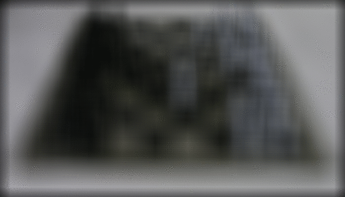
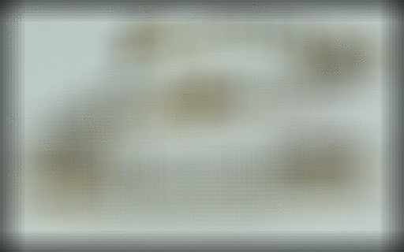

You may notice when taking a photo that when you focus on one thing, another at another distance may blur. Once you snap it, there's no way to recover a sharper image of what has been blurred in the photo. This means that you must decide what you want in focus before you take the photo--or do you? If you have a lot of storage space instead, you can take a photo with a lightfield camera. This type of camera takes pictures from multiple angles in which you can later use to simulate the effect that you want.
In this project, we use lightfield camera data from the Stanford Light Field Archive to refocus images and simulate different apertures in post.
Since lightfield data is from multiple images from different angles, the items closer to the camera will shift a lot more from image to image than the items further away from the camera. By overlaying these images, the items further from the camera will stay in focus but the items near it will blur due to the shift. However, if we shift these images an amount determined by how far they are from the center, we will instead overlay them in the right positions, resulting in the closer items being in focus, but the further ones being blurred. This shift can be determined with the uv's where it is the difference of an image's uv position and the center image's uv position scaled by a factor alpha. The change in this factor alpha determines what is in focus and what isn't.
Below are different lightfield images taken with a 17x17 grid and shifted over alpha values of -1 to 1 in increments of 0.2.
|  |  |
An image from one point in the grid of a lightfield camera can be thought of like a pinhole camera image. The difference with a larger aperture size is that it won't block light rays from one point coming in at multiple angles, creating a blurrier image. Items perpendicular to the camera stay in focus because the rays from them are close to perpendicular even if there are multiple and do not veer off too far from each other after they enter the hole and hit the projected plane. Items off to the edges of the camera view end up blurrier since the multiple different angled rays end up much further from each other as they enter the hole then hit the projected plane.
With a lightfield camera, we can simulate opeing up the aperture by averaging a larger number of images over the grid further and further from the center. The images are measures of light rays from different angles so adding them causes an abundance of rays from one point on an item, which is the same effect as opening up the aperture.
To simulate opening up the aperture, we take the images in the grid within a certain radius of the center and averaged them. The below images were produced with radii of 1 to 5 and 1 to 8 all in increments of 1.
Bells and WhistlesUsing Real DataThis is my attempt at using my own data for refocusing. While some parts do seem to work slightly, like the table coming into focus, it mostly does not work. This is probably because my grid structure was too big for the scene I was capturing as well as me not being able to measure where my camera was precisely. (The space in between the columns of the grid was 1.5 cm while the space in between the rows where 2.5 cm and 2.2 cm.) |